×
🔊 手机听不到声音怎么办？
① 先把手机媒体音量调大，确认没开静音、没连蓝牙耳机；在微信里打开的，点右上角「⋯ → 用浏览器打开」。
② 还是没声音？到应用商店免费下载 Microsoft Edge 浏览器（它自带朗读发声），用它打开本页面就能出声。
③ 换了 Edge 仍然没声音，说明这部手机的硬件/系统不支持网页朗读（多为老旧机型）；近几年买的新手机一般都能正常播放。 → 打开声音自检
① 先把手机媒体音量调大，确认没开静音、没连蓝牙耳机；在微信里打开的，点右上角「⋯ → 用浏览器打开」。
② 还是没声音？到应用商店免费下载 Microsoft Edge 浏览器（它自带朗读发声），用它打开本页面就能出声。
③ 换了 Edge 仍然没声音，说明这部手机的硬件/系统不支持网页朗读（多为老旧机型）；近几年买的新手机一般都能正常播放。 → 打开声音自检
课本附录 · 第 109 页
笔画名称表 · 听写练习
课本第 109 页逐项照录 · 左右两栏共 32 个笔画。名称读两遍可写笔画，例字逐字读两遍可听写字，读完留时间写、写完自动亮出答案。
每条名称读两遍
每个例字读两遍
形状取自课本原页
怎么用：先选听写模式（报名称／报例字）→ 选范围 → 点「开始听写」→
每条都读两遍，读完留时间写 → 写完自动亮答案核对。听写时形状图、名称、例字会先藏起来；
点名称、形状或任意例字，都能把那一项再读两遍。
① 听写控制台 · 每条读两遍
读完留时间写，写完再对答案
当前：报名称 → 每条名称读两遍，请写出笔画或偏旁（也可写名称）。
准备开始
选好范围，点开始听写
待机
准备开始
① 第一遍 → ② 第二遍 → ③ 请书写；写完等下一条自动开始。
听写小提醒：眼睛看本子，耳朵听读音；第一遍听清楚，第二遍边听边记。全部写完再对答案，错的圈出来多写两遍。
② 名称表 · 课本逐项照录
点名称／形状／例字，都读两遍
左栏 · 16 个笔画
笔画名称例字
1
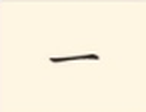
一十
2
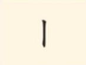
上木
3
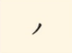
手八
4
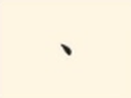
火头
5
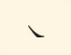
火人
6
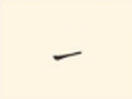
虫我
7
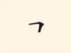
口五
8
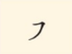
了水
9
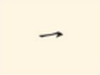
你
10
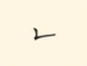
牙山
11
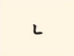
西四
12
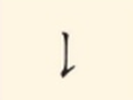
比长
13
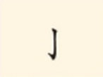
可小
14
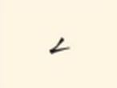
去云
15
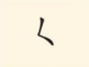
女妈
16
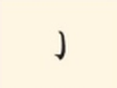
手子
右栏 · 16 个笔画
笔画名称例字
1
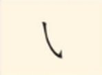
我
2
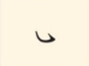
心
3
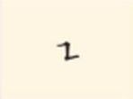
凹
4
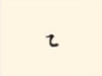
船
5
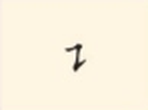
话
6
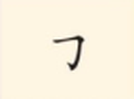
用刀
7
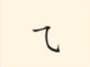
风
8
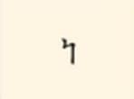
鼎
9
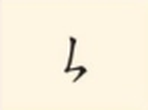
专
10
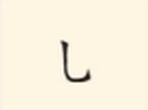
七儿
11
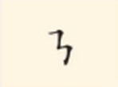
凸
12
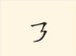
及
13
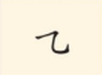
九几
14
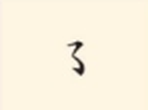
那
15
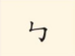
马鸟
16
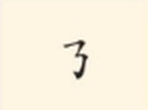
奶
共 32 个笔画
课本例字里红色的一笔就是本行笔画，点下方「课本原页」放大即可核对；本页例字用文字呈现，不改写课本字形。 形状小图直接裁自课本原页，与课本字形完全一致；名称与例字按课本逐行照录。
听写流程、小提醒、闯关题为本页自写练习，不是课本原文。
③ 闯关 8 题 · 名称与例字对对碰
点选项即判分，题目选项都有配音
还没开始，点上面的选项试试看。
④ 课本原页点图放大核对红色标注
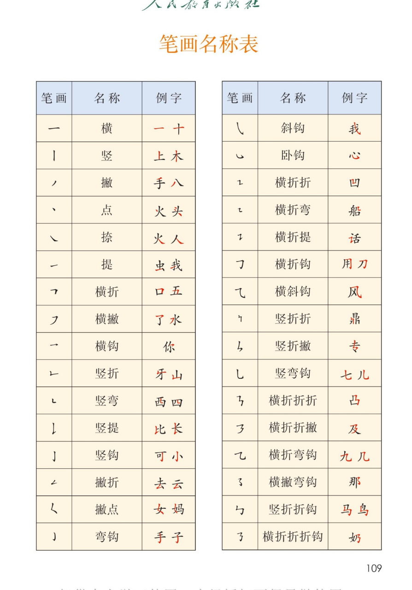
课本第 109 页 · 笔画名称表
教材原文、名称、例字与页码均按课本附录逐项照录；朗读稿一律只用汉字，形状和红色标注以课本原页为准。
本页与识字表、写字表同属「附页 · 工具表」，都按每字读两遍的方式做听写练习。